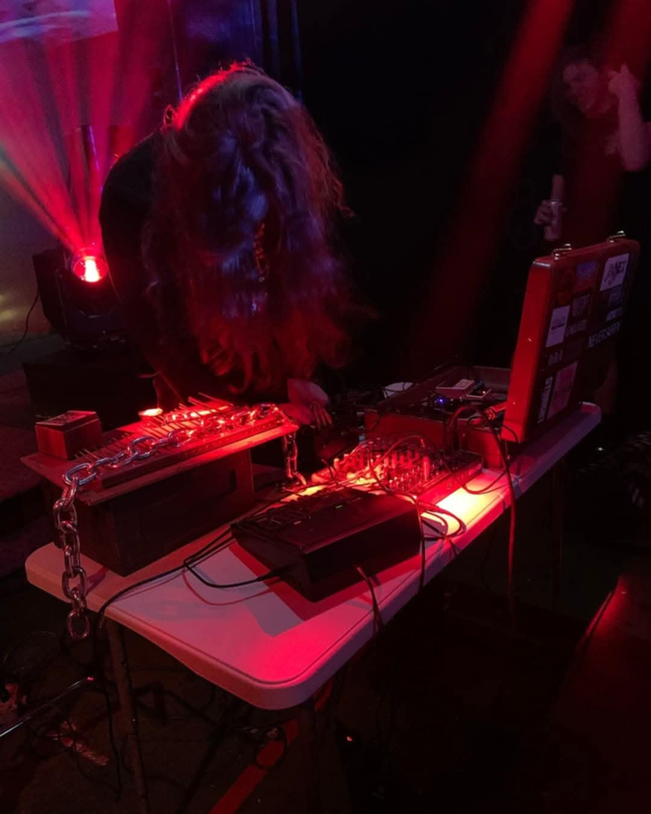

https://closerbones.bandcamp.com
NH-based
artist Closer Bones has been creating genre-defying sound as therapy
since 2012. Using assorted electronics & contact microphones, Closer
Bones weaves together harsh noise, power electronics, drone, glitch,
& more to create contemplative dynamic soundscapes. With 2019's “The
Destroying Angel” on Black Ring Rituals Records they started the
Apostate Electronics series, a sharp & methodical auditory flaying
& exposition of the cult-like Jehovah's Witnesses. Other releases
have focused on isolation, depression, anxiety, police brutality,
oppression, & more. Their work has been called “layered,
complex…fresh & inventive”. With appearances on radio stations in
NYC, the UK, & the midwest, along with live performances across the
country, Closer Bones has continued to spread the word of personal
salvation through noise & community. They are also one of the
primary driving forces behind the Manchester NH springtime heavy
electronics festival Slabfest, which will have it’s 4th iteration on May
17th & 18th.